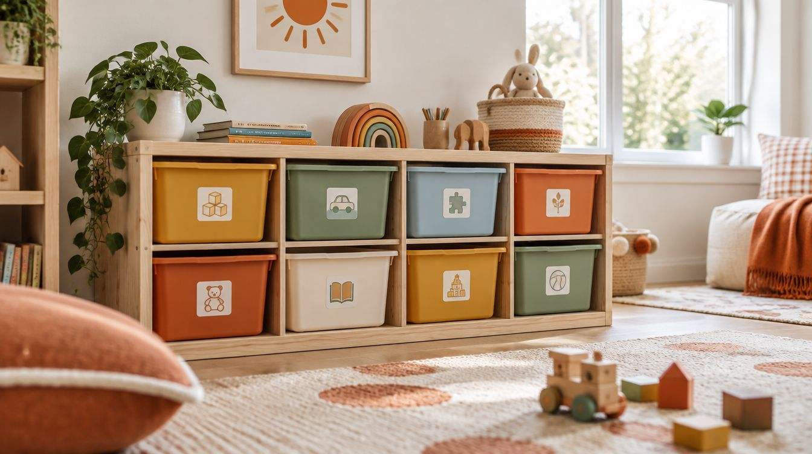
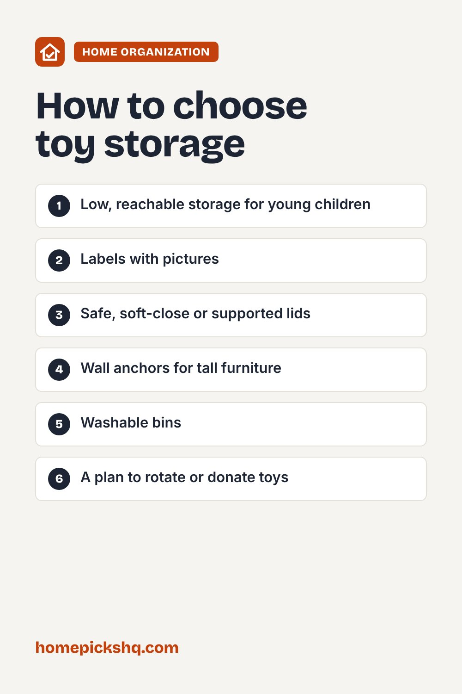

Best Toy Storage: Bins, Shelves, and Safe Chests

How we write these guides: we research manufacturer specifications, expert guidance, and owner feedback. We do not claim to have lab-tested every product. If product links are added, some may be affiliate links; see our disclosure.
Toys have a way of taking over a room. Good toy storage helps kids find and put away their things, and it keeps floors clear. Safety matters too, so here is what to look for as you choose.
Match storage to age
Toddlers do best with low, open bins and shelves they can reach by themselves. Older children can handle labeled bins, drawers, and cubbies. Place frequently used toys at kid height and less-used ones higher up.
Open bins and cubbies
Cube shelves with fabric or plastic bins are flexible and let you grow with your child. Picture labels help young children know where things go. Washable fabric bins are a good choice for messes.
Toy chests and lids
Choose chests with a safe lid, such as a lightweight lid, a soft-close hinge, or a lid support that holds it open, to reduce the risk of pinched fingers or the lid falling. Look for ventilation holes or a design that does not latch shut, so a child cannot become trapped.
Tip-over safety
Anchor tall shelves and dressers to the wall, since furniture tip-overs are a known hazard for young children. Choose stable, low units when possible and avoid placing heavy items on high shelves.
Keep it manageable
Rotate toys by storing some away and swapping them out every few weeks. Sort by type, such as blocks, cars, and art supplies, and set a limit on how many bins you fill. Donate toys that are outgrown.
Quick buying checklist
- Low, reachable storage for young children
- Labels with pictures
- Safe, soft-close or supported lids
- Wall anchors for tall furniture
- Washable bins
- A plan to rotate or donate toys

Frequently asked questions
How do I get kids to clean up?
Make it easy with labeled bins and a regular tidy-up routine.
Are toy chests safe?
They can be if they have a safe hinge or no lid. Avoid heavy lids that can slam.
How many toys are too many?
If your child cannot find or play with them, it may be time to rotate or donate.